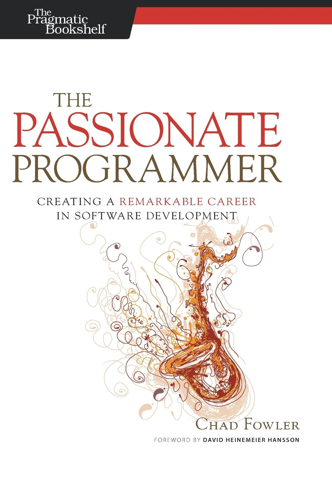

Utiliza el generador, Luke
Por Salva Molina / @salva_bg
¿Quién c...?
- Salva Molina
- slv_ /"self"/ en Drupal.org
- Drupal Developer @ Code Enigma
- Rants, cries and nonsense at http://adevfromtheplains.com
¿De qué vamos a hablar?
- FTG: Un generador de campos custom.
- Yeoman: Un framework para generar código.
- Genova: Más generación de código.
¿Para qué tanto generador?
- El copy paste debe morir.
- Eficiencia.
- Dedicar nuestro tiempo a los problemas de verdad.
Objetivos
- Ampliar nuestro juego de herramientas.
- Salir de la isla de Drupal.
- No hace falta esperar a Drupal 8.
The Field Type Generator (FTG)
Ejemplo de campo personalizado
Custom fields: Problema
- Mínimo 9 hooks a implementar.
- Arrays everywhere.
- Esquema para la BDD
- Formulario, validación, integraciones, etc.
La solución: FTG
Venga esa Demo, bitch.
¡Quieto parao!
- Validación.
- Indices en el esquema creado.
- Un buen field formatter para dejarlo bonito
- ...
http://yeoman.io
Yeoman
- Módulo de Node JS.
- Framework Generación de código.
- Unos 3360 generadores contribuidos.
- Unos 25 generadores para Drupal.
Instalación y uso
npm install -g yeomannpm install -g generator-nameyo generator-nameSaca la demo y cállate

En resumen
- http://yeoman.io/generators/
- Tutorial de creación de un plugin: http://goo.gl/ckzVL9
- Review de plugins para Drupal: http://goo.gl/Z7HEgH
- Ctools plugins, módulos, entities, themes, headless Drupal, etc...
Genova
No tenía imagen para esto, sorry.
Genova
- Mismo concepto que Yeoman: Q & A.
- Drupal-based: Bye bye Node.js.
- Manejable mediante Drush.
- API no documentada, y no mantenida.
Genova: Generadores
- Módulos y componentes (css, theme, schema, menu, permission, etc).
- Entity types.
- Formularios de varios pasos.
Genova: Demo
Ejemplos y tutoriales
I heard you like Drush...

¿Qué es IDC?
- Interfaz para comandos interactivos de Drush.
- 1 comando => 1 clase de PHP.
- 1 comando => 1 plugin de ctools.
- Mismo concepto que Yeoman.
¿Por qué?
- Drush mola, pero tiene sus limitaciones.
- Facilitar el acceso a funciones de Drupal...
- ... y mejorar Drush como herramienta de desarrollo...
En resumen
- Utiliza los generadores, Luke.
- Construcción de herramientas propias.
- Miremos a otras comunidades
Fuentes
kthxbye
¿Preguntas?
Más, pero no mejor...
- Twitter: @salva_bg
- Github: salvamomo
- A Dev From the Plains